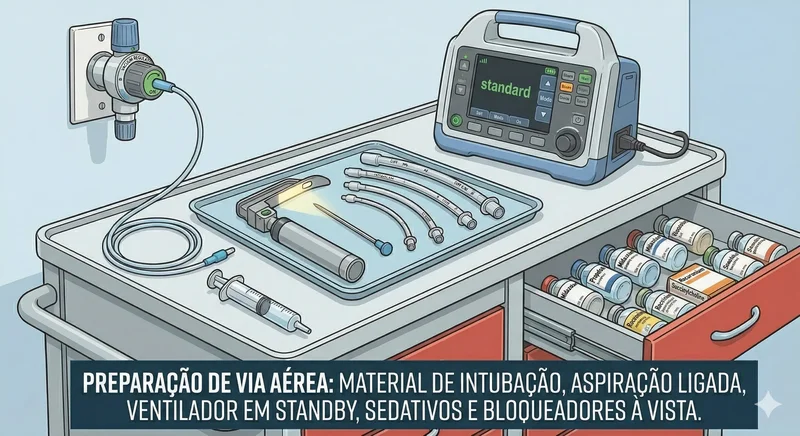
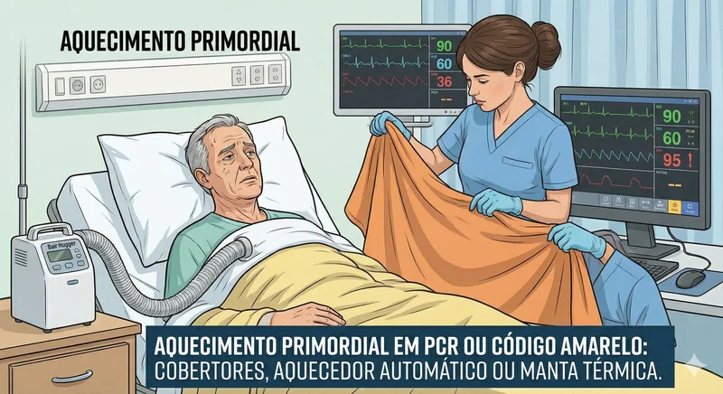
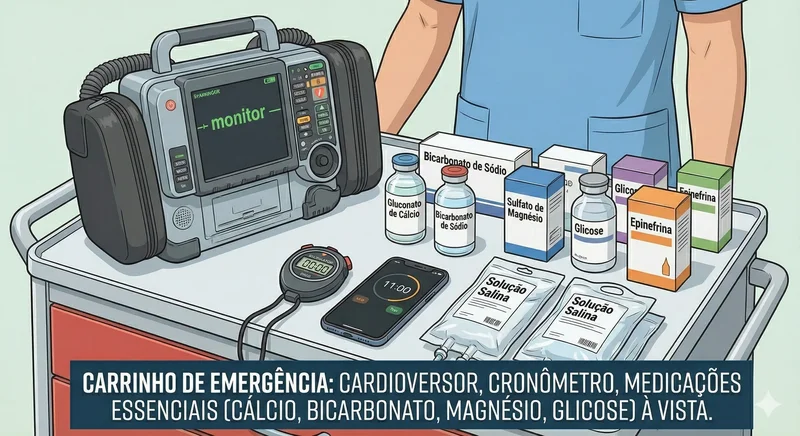

Os 5 H's da PCR são cinco palavras que começam com a letra "H" junto com os 5 T's da PCR representam as principais causas prováveis da Parada Cardiorrespiratória que devem ser rapidamente identificadas e corrigidas durante o atendimento de emergência. Este conceito é fundamental no protocolo ACLS (Advanced Cardiac Life Support) e orienta a abordagem sistemática durante a reanimação cardiopulmonar. Cada palavra que começa com a letra "H" corresponde a uma condição específica que, se corrigida, pode resultar na reversão da parada e na restauração da circulação espontânea. Falaremos neste artigo sobre os 5 H's.
Os 5 Hs da PCR
O que são os 5 Hs?
Os 5 Hs são cinco palavras que começam com a letra "H" de condições metabólicas e fisiológicas que podem causar ou contribuir para uma parada cardiorrespiratória. Eles são memorizados pela sigla "H's": Hipothermia, Hipocalemia/Hipercalemia, Hidrogenio (Acidose), Hipoxia, Hipovolemia. A identificação e correção rápida destes fatores é essencial para aumentar as chances de sobrevivência e reduzir sequelas neurológicas.
1º H - HIPÓXIA (Falta de Oxigênio)
A hipóxia é a primeira causa a ser investigada na PCR. O cérebro é extremamente sensível à falta de oxigênio, podendo sofrer danos irreversíveis em apenas 4-6 minutos. A hipóxia pode resultar de:
- Obstrução das vias aéreas superiores
- Depressão respiratória por fármacos (opioides, sedativos)
- Edema pulmonar ou pneumotórax
- Intoxicação por monóxido de carbono
- Afogamento ou quase-afogamento

Tratamento da Hipóxia:
- Garantir vias aéreas pérvias: Elevação do Mento, verificar obstrução, realizar aspiração orotraqueal se necessário
- Ventilação adequada: Se estiver em uma PCR, antes de uma via aérea avançada é necessário um profissional para Ambuzar, 2 insuflações a cada 30 compressões torácicas.
- Oxigenoterapia: Em um primeiro momento cateter de O2, podendo evoluir para uma Ventilação mecânica
- Em bloco operatório: A intubação orotraqueal provavelmente já estará estabelecida, caso não, é importante o suporte do enfermeiro junto ao anestesista.
- Reversão de sedação: Naloxone (Narcan) para overdose de opioides, ficando isso À conduta médica
- Aspiração: Manter sistema de vácuo montado de prontidão. Caso ocorra a intubação, aspire a VAS antes do procedimento.

⚠️ Atenção Importante:
A oximetria de dedo pode fornecer leituras falsas em casos de hipoperfusão. Métodos mais adequados incluem: avaliação da expansão torácica, capnografia e gasometria arterial para avaliar a oferta efetiva de oxigênio.
2º H - HIPOVOLEMIA (Baixo Volume Sanguíneo)

A hipovolemia é a segunda causa a ser verificada. Pode ser causada por hemorragias externas ou internas, desidratação severa ou queimaduras extensas. O volume sanguíneo insuficiente compromete a perfusão tecidual e a oferta de oxigênio aos órgãos vitais.
Causas comuns:
- Hemorragias traumáticas
- Ruptura de aneurismas
- Hemorragias digestivas
- Desidratação extrema
- Queimaduras de grande extensão
Tratamento da Hipovolemia:
- Transfusão de Hemoderivados: Realizar coleta de tipagem Sanguinea, em caso de emergencia, termo de responsabilidade justificando Infusão de Concentrado de hemácias O-
- Cristaloides: Ringer lactato para reposição volêmica, repõe volume e eletrólitos perdidos alem de poder corrigir uma acidose metabólica
- Controle da hemorragia: Compressão direta, torniquete, Bloco operatório de emergência para conter a hemorragia
- Ponderança na Infusão de Soluçoes fisiologicas: Até 2000mL (Infusão rápida) dando prioridade após isso aos hemoderivados conforme diretrizes da AHA
- Hipotensão permissiva: Avaliação intensiva do paciente pelo médico atuante, e considerando valores aceitaveis de hipotensão sob monitorização contínua.
- Atenção aos Sinais: Muita atenção a pressao arterial em hipovolemia, leva a hipotensão e de forma compensatória a princípio haverá uma taquicardia seguido depois de uma bradicardia, pulso fino e fraco, taquipnéia, rebaixamento de nivel de consciencia, hipoglicemia e hipotermia
3º H - HIPOTERMIA (Baixa Temperatura Corporal)

A hipotermia (temperatura corporal < 35°C) causa alterações significativas no sistema cardiovascular e neurológico, reduz o ritmo cardíaco, diminui a perfusão tecidual e stá associada a distúrbios elétricos que podem evoluir de taquicardia inicial para bradicardia e, posteriormente, para ritmo chocável.
Efeitos da hipotermia:
- Diminuição do metabolismo cerebral pela diminuição da perfusão
- Alterações na condução elétrica cardíaca
- Redução ineficaz das trocas gasosas
- Depressão do sistema nervoso central

Tratamento da Hipotermia:
- Manta térmica elétrica: Método mais eficiente de aquecimento
- Solução fisiologica aquecido: Fluidos aquecidos a 40-42°C
- Aquecimento ativo: Mantas químicas, aquecedores portáteis
- Monitorização cardíaca: ECG contínuo devido ao risco de arritmias
- Ambiente: Desligar o ar condicionado se possível
4º H - DISTÚRBIOS DE POTÁSSIO

Os distúrbios de potássio são críticos na PCR. Tanto a hipocalemia (< 2,7 mEq/L) quanto a hipercalemia (> 6,0 mEq/L) podem causar arritmias fatais e comprometer a contratilidade cardíaca. A hipocalemia frequentemente está associada à hipomagnesemia.

4.1 Hipocalemia (< 2,7 mEq/L):
Tratamento:
- Reposição de Magnésio: O responsável pelo carrinho de emergencia, pensando nas Hipoteses de causas da PCR 5 Hs deve ser sabio e deixar "ao olhos", de facil acesso as ampolas de magnésio, circuito, bomba de infusão
- Reposição de K+: Não recomendada na PCR segundo AHA 2010/2021
- Eficiência: Profissional de enfermagem: ter em mão os exames laboratoriais recentes do paciente e ter realizado a coleta de sangue para o laboratório de inicio da deterioração clínica do paciente pode garantir um desfecho bom ao paciente.

4.2 Hipercalemia (> 6,0 mEq/L):
O gluconato de cálcio é antagonista do K+, em caso de hipercalemia seu carrinho de emergencia deve estar com esse farmaco "aos olhos" no carrinho:
- Gluconato de Cálcio: 10-20mL EV em 2-5 minutos
- Insulina + Glicose: Facilita entrada do K+ nas células
- Bicarbonato de Sódio: Eleva pH sanguíneo, promove entrada de K+ nas células
- Diuréticos ou resina: Para remoção de K+ do organismo
- Dialise: Em casos severos e refratários
- Responsavel pelo carro de emergencia: deixe sempre essas medicaçoes encima do seu carrinho de emergencia, organize sua assistencia
5º H - ACIDOSE METABÓLICA (H+)
A acidose metabólica (pH < 7,35) resulta do acúmulo de ácidos ou perda de bicarbonato. É comumente associada ao diabetes mellitus descompensado e doença renal crônica. O ECG pode mostrar baixa amplitude das ondas.
Causas de acidose metabólica:
- Cetoacidose diabética
- Insuficiência renal
- Acidose lática (hipóxia tecidual)
- Ingestão de tóxicos (metanol, etilenoglicol)
- Diarreia severa

Tratamento da Acidose:
- Bicarbonato de Sódio: Indicado para pH < 6,7 ou > 7,2
- Correção da causa subjacente: Tratar a causa da acidose
- Ventilação adequada: Compensação respiratória
- Monitorização: Gasometria arterial seriada

Protocolo de Abordagem dos 5 Hs
Ordem de Investigação e Tratamento:
Importância Clínica dos 5 Hs
A memorização e aplicação sistemática dos 5 Hs durante a PCR são fundamentais para aumentar as taxas de sobrevivência e reduzir sequelas neurológicas. Cada condição representa um factor reversível que, se identificado e corrigido rapidamente, pode resultar na restauração da circulação espontânea. O conhecimento aprofundado destes conceitos é essencial para todos os profissionais de saúde envolvidos no atendimento de emergência.
💡 Dica de Estudo:
Mnemônico em português: "HipóHipóHipoHipoHipo" - memorize como: HipóXia, HipoVolemia, HipoTermia, HipoKalemia/Hiperkalemia, H+ (Acidose)